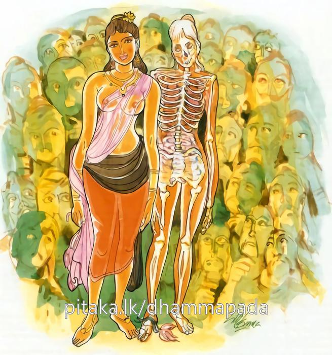

11-2 දෙවැනි සිරිමා පුවත
මෙම කතාව සද්ධර්ම සාගරයෙන් ද කියවන්න.
පස්ස චිත්තකතං බිම්බං අරුකායං සමුස්සිතං
ආතුරං බහුසඞ්කප්පං යස්ස නත්ථි ධුවං ඨිති.
යම් මේ සිරුරෙක නිත්ය පැවැත්මෙක් නැද්ද, (නව මහා ව්රණමුඛයන්ගේ වශයෙන් ව්රණස්වභාව වූ ව්රණසමූහ වූ) තුන් සියයක් ඇටින් ගළපා සිටුවන ලද්දා වූ, (හැම කල්හි ම කැවීමෙන් පෙවීමෙන් නැහැවීමෙන් ඉළීමෙන් ඉරියවු පෙරැළීම් ආදියෙන් පරිහරණය කට යුතු හෙයින් සතතයෙන්) ගිලන් වූ, බොහෝ දෙනා විසින් ශුභය ශුචි යැ යි කල්පනා කරණ ලද්දාවූ, (වස්ත්රාභරණාදියෙන් සරහා) විසිතුරු කරණ ලද්දා වූ මේ ශරීරය, මේ මෘතකලෙබරය (අසුචි දුගඳ පිළිකුල් සේ) බල.

"පස්ස විතත්කත” යන මේ ධර්ම දේශනය ශාස්තෲන් වහන්සේ වේළුවනාරාමයේ වැඩ සිටිය දී සිරිමා අබිසරුලිය නිමිති කරගෙන දේශනා කළහ.
ඇය රජගහනුවර සිටි රූමත් වෙසඟනක වුවාය. එක් කාලයක සුමන සිටු පුතුගේ භාර්යාව වුවාය. පුණ්ණක සිටුදියණිය වන උත්තරා උපාසිකාවට ඇය වරදක් කොට උරණ වී සිට, පසුව ඇය සමා කරවාගෙන පහදනු සඳහා, ඇගේ නිවසේ භික්ෂු සංඝයා සමග කරන ලද බත්කිසට අනතුරුව බුදුන් සමාකරවා එදවස බුදුරදුන්ගේ භුත්තානුමෝදනය අසා
ක්රෝධය කෝප නොවීමෙන්ද - යහපත් බවින් අයහපතද
ලෝභය දානයෙන්ද, සත්යයෙන් අසත්යයද ජයගන්න.
මෙම ගාථා දේශනයෙන් සෝවාන් ඵලයට පත්වුනි. මෙය කෙටි අදහසයි. විස්තර කථා ක්රෝධ වර්ගයේ අනුමෝදනා වර්ණනාවේ සඳහන් වේ. මෙලෙස සෝවාන්ඵලයට පත් සිරිමා අභිසාරිකාව දෙවන දිනට බුදුරජාණන් වහන්සේට ආරාධනා කර මහදන් දී සංඝයා වහන්සේලාට සළාක අට බතක් නිතර පුජා කළාය. මුල පටන්ම නිතර භික්ෂූන් අටනමක් නිතර යති. ගිතෙල් ගන්න. දී කිරි ගන්නැයි මේ ආදිය කියා උන්වහන්සේලාගේ පාත්රය පුරවයි. එක් නමක් ලබන පිණ්ඩ දානය තුන්, හතර දෙනෙකුට ප්රමාණවත් වේ. දිනපතා කහවණු සොළසක් වියදම් කරමින් පිණ්ඩපාතය දෙනු ලැබේ. ඉක්බිති එක් දිනක් එක් භික්ෂුවක් ඇගේ නිවසේ අටනමකට දෙන ආහාර පිණ්ඩදානය වළදා යොදුන් තුනක් පමණ දුර විහාරස්ථානයකට වැඩම කළේය. අනතුරුව සවස තෙරුන්ට උවටැන් කරන්නෝ ඇවැත්නි කොහින් භික්ෂාව ගෙන වැඩම කළේද යනුවෙන් විමසුහ සිරිමා - උපාසිකාවගේ අට්ඨක බත් වැළඳු බව උන්වහන්සේ පැවසුහ. ඇවැත්නි එම දානය මනාපයෙන් දෙන්නක්ද? ඇයගේ දානය වර්ණනා කළ නොහැකිය. ඉතාම ප්රණීත ලෙස දානය දෙති. එක් භික්ෂුවක් ලබන දානය තුන් හතර දෙනෙකුටම ප්රමාණවත් වේ.
ඇගේ දාන වස්තූන් දැකීමට උත්තරිතර වේ. එම කාන්තාව මේ මේ ආකාර යයි ඇගේ ගුණ කියයි. අනතුරුව එක් භික්ෂුවක් ඇගේ ගුණ කථාව අසා නොදැකම ඇය කෙරෙහි ස්නේහයෙන් බැඳුනි. එසේ ස්නේහයක් උපදවා ගෙන මා ඇය වෙත ගොස් දැකිය යුතු යයි තමන්ගේ වස් ප්රමාණය කියා එම භික්ෂුව සිටින බව දැන ඇවැත්නි හෙට එම නිවසේ ඔබ වහන්සේ සංඝථෙර වී බත් අටක් ලබන්නේයයි අසා එම අවස්ථාවේදීම පා සිවුරු ගෙන පිටත් වූයේද අළුයම අරුණ නැගෙනවිට සලාකයේ මුලට පැමිණ සිටියේ සංඝ ස්ථවිර බවට පත්වී ඇගේ නිවසේ දී අට්ඨක බත් ලැබුවේය. යම් භික්ෂුවක් ඊයේ වළදා පිටත්වීද එම භික්ෂුව ගිය අවස්ථාවේදී ඇගේ සිරුරේ ආබාධයක් හටගත්තේය. එනිසා ආභරණ ගලවා තබා වැතිරුණාය. අනතුරුව අටකොටස් බත ලැබ වැඩමකළා වූ භික්ෂූන් දැක සේවිකාවෝ ඇයට දැනුම් දුන්හ. එවිට ඇය - පාත්රය සියතින් ගෙන වාඩිකරවීමට හෝ දානය පිළිගැනීවීමට නොහැකිව දාසින්ට අණ කළෝය. යෙහෙළියෙනි ! තෙරුන්ගෙන් පාත්රය ලබාගෙන වාඩිකරවා - කැඳ පානයට දි කැවිලි වර්ග පිළිගන්වා බත් වළදන අවස්ථාවේදී පාත්රය පුරවා දෙන්නැයි කිවාය.
ඈලා ආර්යාවනි යහපතැයි කියා භික්ෂූන් වහන්සේ ගෙතුළට කැඳවා කැඳ පොවා කැවිලි වර්ග පිළිගන්වා බත් වළදන අවස්ථාවේ දී පාත්රය බතින් පුරවා ඇයට (සිරිමා අබිසාරිකාවට) දැනුම් දුන්හ. ඇය මාව වත්තන් කරගෙන ආර්යන් වහන්සේලා වෙත වඳින්නට ගෙන යන ලෙසට කීවාය. ඈලා විසින් භික්ෂූන් වෙත ගෙන යන ලද්දී වෙවුලන ගතින් භික්ෂූන් වැන්දාය. එම භික්ෂුව - වර්ෂ කෝටි ගණනක සිට රැස් කළ කෙලෙස් ඇත්තේ උකටලීව බත් අනුභව කළ නොහැකිව පාත්රය ගෙන විහාරයට ගොස් පාත්රය වසා තබා සිවුරු කොන අතුරා වැදහොත්තේය. ඉක්බිති එක් මිත්ර වූ භික්ෂුවක් ඇවිටිලි කළේ ද වළදවන්නට නොහැකි විය. එම භික්ෂුව නිරාහාර වූවෙක් විය.
එදිනම සවස සිරිමා වෛශ්යාව අභාවප්රාප්ත වූවාය. රජතුමා බුදුන් වෙත පණිවුඩයක් යැවුවේය. ස්වාමීනි ! ජීවක වෛද්යවරයාගේ නැගණිය වු සිරිමාව කළුරිය කළාය. යනුවෙන් එහි සඳහන් විය. බුදුරජාණන් වහන්සේ මේ කරුණු දැන රජුට පණිවුඩයක් යැවුහ. එහි සඳහන් වුයේ සිරිමා දේහය- ආදාහන කිරීමෙන් පලක් නැත. ඇගේ සිරුර අමුසොහොනට ගෙනගොස් බලු කපුටු ආදීන්ට කෑමට නොහැකි ලෙසට මෘත ශරීරය ආරක්ෂා කරන්න යනුවෙනි. රජතුමා ද එලෙස කළේය. පිළිවෙළින් මරණයට පත්වී දින තුනක් ගත විය. සතරවැනි දින සිරුර ඉදිමුනි. නව දොරෙහි සැරව වැගුරුනි. මුළු සිරුර බිඳුන බත් සැළියක් සේ වීය. රජු නගරයේ ගෘහ ආරක්ෂකයින් හා ළදරුවන් හැර සියළුදෙන එන ලෙසටත් - සිරිමා වෛශ්යාවගේ මෘත සිරුර බැලීමට නොඑන අයට කහවණු අටක් දඩ නියමකරන බවත් නියම කර අණ බෙර ලැබිය. බුදුරජාණන් වහන්සේ වෙතද බුදුන් ප්රමුඛ භික්ෂූන් වහන්සේලා සිරිමාගේ මෘත ශරීරය නරඹන්නට එන්නැයි පණිවිඩ යැවීය.
බුදුහු භික්ෂූන්ට දන්වා ලුහ. ඒ තරුණ භික්ෂුව ද දින හතරක් කිසිවෙකුගේ වදන් නොපිළිගෙන නිරාහාරව නිදාසිටියේ ය. පාත්රයේ බත් කුණු විය. පාත්රයේ මලකඩ ද මතුවිය. අනතුරුව ඔහු වෙත එළඹ ඇවැත්නි, බුදුරජාණන් වහන්සේ සිරිමාගේ මළ සිරුර බැලීම සඳහා යයි පැවසුහ. ඔහු එසේ නිදාගෙනම සිරිමා යන වචනය ඇසුන විගස වහා නැගිට කුමක් කියත්දැයි විමසීය. බුදුහු සිරිමා දකින්නට වඩිනා බවත් යන්නේදැයි විමසුවිට ඔව් මමත් යන්නෙමියි බත් විසිකර පාත්රය සෝදා පැසේ දමාගෙන භික්ෂූන් සමග පිටත්විය. බුදුරජාණන් වහන්සේ භික්ෂූන් පිරිවරාගෙන එකත් පසෙක සිටියේය. භික්ෂු භික්ෂුණි සංඝයා පිරිවරාගෙන සිටි අතර අනෙක්පස උපාසක උපාසිකා පිරිස් සිටියහ. බුදුහු රජුන් ගෙන් විමසුවේය. මහරජ මැය කිනම් තැනැත්තියක්ද? ස්වාමීනි ඇය ජීවකගේ සොහොයුරි වු "සිරිමා”ය. මැය සිරිමාවද? එසේය ස්වාමීනි, එසේ නම් සිරිමා දහසක් දී ගන්නැයි අණ බෙර යවන්නැයි පැවසුහ. රජු එසේ කළේය.
එකෙකුදු හා - හුම්- යන ශබ්දයක් නොකළේය. රජතුමා බුදුන්ට කිසිවෙක් නොගත්තේයයි පැවසීය. එසේ නම් මහරජ වටිනාකම අඩු කරන්නැයි පැවසුහ. රජු සිරිමාවගේ සිරුර පන්සියයකට ගන්නැයි අණබෙර ලැවීය. කිසිවෙක් නොගන්නා බව දැක තුන් සියයකට ගන්නැයි ඉල්ලීය. අනතුරුව කහවණු විස්ස - දහය - පහ - පසුව එක් කහවණුවකට ද මිල කළේය. අඩකට - පාදයකට - මසකට හෝ ගැනීමට අකමැතිවිය. නොමිලයේ ගන්නැයි බෙර ලැවීය. කිසිවෙකුගේ හා හුවක් නැතිවිය. රජු ස්වාමීනි නොමිලයේ ගන්නෝ ද නැතැයි පැවසීය. බුදුරජාණන් වහන්සේ මහණෙනි බලන්න. මහජනයාට ප්රියවු මේ කාන්තාව දිනකට මසුදහසක් ගෙවා පහස ලැබුහ. දැන් නොමිලයේ ගන්නෙක් ද නැත. මෙබඳු රුව ක්ෂය වීමට වැයවීමට පත්වී අනතුරව සිරුර බලන්නැයි මේ ගාථාව පැවසුහ.
දහසක් ගෙවා දිනකට ඇය ළගම වැටී
විසිතුරු ලෙසට සැරසුණු මේ සිරුරෙ ගැටී
කුණු වී සැරව නවදොරකින් ගලන හැටී
නරඹනු මැනැවි - අනිසය සිහි කරනු වටී.
මෙහි චිත්තකතං යනු වස්ත්රාභරණ මල්ලතු ආදීන්ගෙන් විසිතුරු කරන ලද යන අරුතයි. බිම්බන්ති - දීර්ඝ ආදී ඒ ඒ තැන ආ ප්රත්ය ඇත්තා වූ අරුකායං නව දොරටුවකින් කුණු වෑහෙන්නා වූ නමුත් සිත් ඇඳ බැඳගන්නා වූ මේ සිරුරේ තිර බවක් නැත.
සමුස්සිතං - ඇට කැබලි තුන්සියයකින් යුතු ආතුරං සෑම කල්හිම ඉරියව් පරිහරණයේ දී නිතර නිතර රෝගාබාධයන්ට ගොදුරු වන්නාවූ බහුසඬකප්ප - මහ ජනයා බොහෝ සේ රූප කායෙහි බැදී යන්නාවූ - යස්සනත්ථි ධූවංඨිති - යනු යමක් කෙරෙහි ස්ථාවරව හෝ ස්ථිර බවක් නැත ද ඒකාන්තයෙන් බිදෙන විසිරෙන වැනසී යන ස්වභාවය බලන්න. යන අරුතයි. දේශනාව අවසානයේ අසුහාර දහසක් ප්රාණීන්ට ධර්මාවබෝධය විය. ඉහත කි භික්ෂුවද සෝවාන් ඵලයෙහි පිහිටියේය